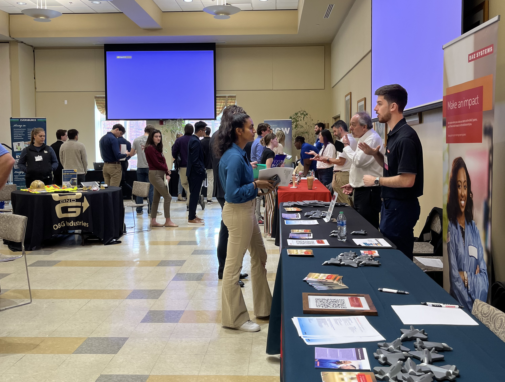

2025 Computer Science Career Fair

For Companies
We are excited to welcome you to Worcester Polytechnic Institute for the UPE Computer Science Career Fair on October 29th, 2025, 1-3pm. To ensure a smooth and convenient experience, we have provided instructions below:
Location: The Career Fair is taking place at Alden Memorial, #17, labelled on the map below.
Load In/Out: To drop off display materials, please drive to the loading dock of Alden Memorial, drop off items with a staff member and proceed to parking. The address for Alden Memorial is 172 West Street, Worcester, MA.
Load In/Out Timing: Load In and set up will begin at 12pm and Load Out will end at 4pm.
Materials: Each employer will have use of a 6' table and two charis. We encourage branded tableclothes, informational handouts, and promotional giveaways. We request that tabletop or floor displays be contained within the tabletop footprint.
Representatives: Due to capacity issues and size limitations of the venue, we are requesting employers keep representatives to three company representatives only.
Resumes: Students are excited to speak with you about opportunities, please be prepared to receive student reseumes and requests to connect professionally.
Parking Options:
On-Site Parking: You may park in the Park Ave Garage. The address for the Park Avenue Garage is 151 Salisbury Street, Worcester, MA. You should have received a parking pass in your email recently.
Street Parking: If on-site parking is unavailable or you prefer an alternative, you can also find street parking near Alden Memorial.
Map and Directions: Please note the campus map below that can be used to orient yourself for where the career fair is hosted.
If you encounter any issues or need assistance with parking, please feel free to contact us via upe-officers@wpi.edu for information before the day of the event.

For Students
We are excited to invite the broader WPI CS community to the career fair this year! We expect it to be a smaller event but are excited to be welcoming these eight companies to campus:
- Vatn Systems
- Whoop
- Crane Currency
- Jacobs
- Peraton Labs
- Draft Kings
- MIT Lincoln Labs
- TTM Tech
If you have questions about the event feel free to email upe-officers@wpi.edu leading up to the event.